剧
共 53 条
电锯人
绝命毒师 第五季
太爽，最后倒在实验室为jesse开脱，完美的闭环
感觉一点点小瑕疵就是最后两集white转变的实在是太快了
感觉一点点小瑕疵就是最后两集white转变的实在是太快了
绝命毒师 第四季
结尾头皮发麻
安达与岛村
烂
安达与岛村
8月18日00:36:21
甚至都算不上一个正常的故事
莫名其妙不知所谓
甚至都算不上一个正常的故事
莫名其妙不知所谓
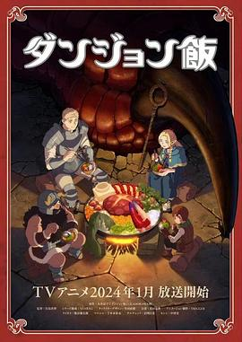
迷宫饭
前几集还有点看不下去，越看越精彩
很喜欢，9/10
第二季快点吧
一共四个ed和op都太好听
很喜欢，9/10
第二季快点吧
一共四个ed和op都太好听
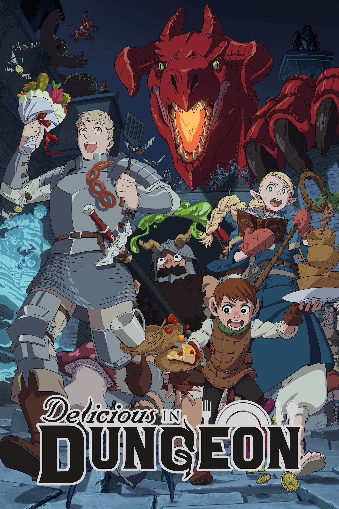
迷宫饭
（暂无短评）
绝命毒师 第三季
都看到这里了，还是坚持看完吧
比想象中要烂
比想象中要烂
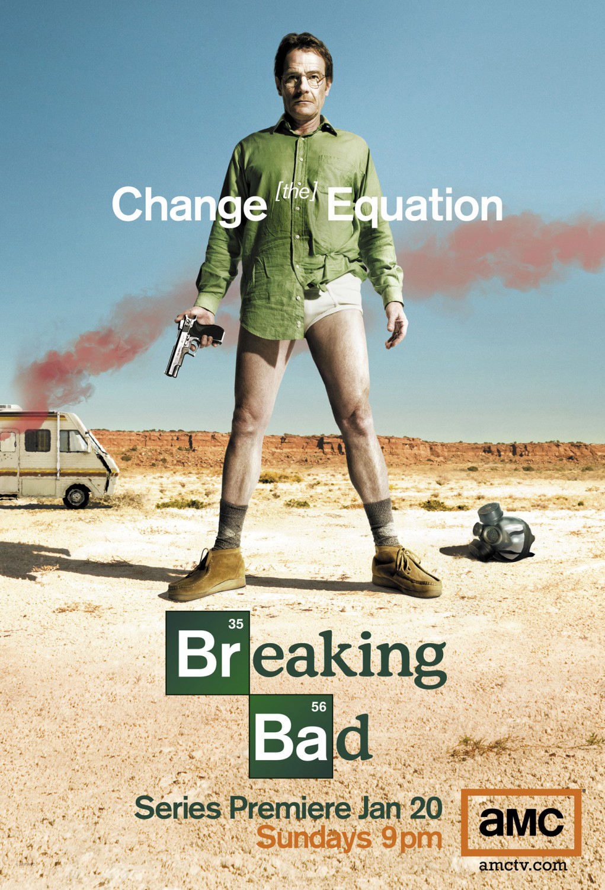
绝命毒师 第一季
20260721
绝命毒师 第二季
（暂无短评）

绝命毒师
（暂无短评）
下流梗不存在的灰暗世界
两天看完。后半段属实太无趣，毁了一个好题材
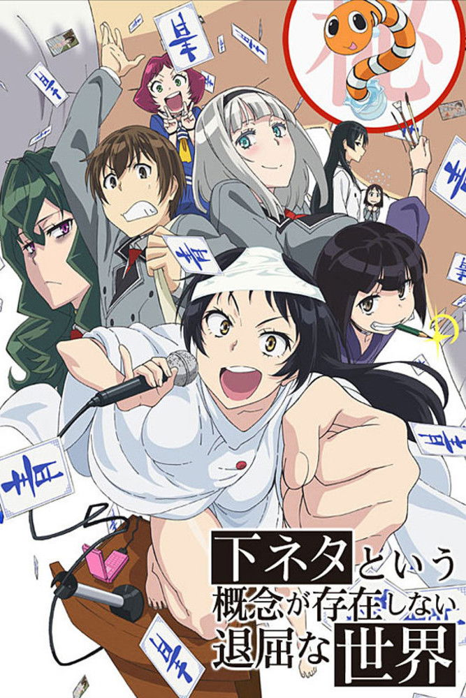
没有黄段子的无聊世界
一开始还挺有意思的
异国日记
有些地方没看懂
有点难对asa产生共鸣，但还是一部非常有趣的作品
要是原作完结了再改成动画就好了
有点难对asa产生共鸣，但还是一部非常有趣的作品
要是原作完结了再改成动画就好了
异国日记
（暂无短评）
白箱
隔了几天之后三天4集+6集+4集一口气看完了，还剩两个ova和剧场版没有看
非常有意思
非常有意思
白箱
（暂无短评）
这个美术部有问题！
很不错的作品，也许有空闲会去看看漫画
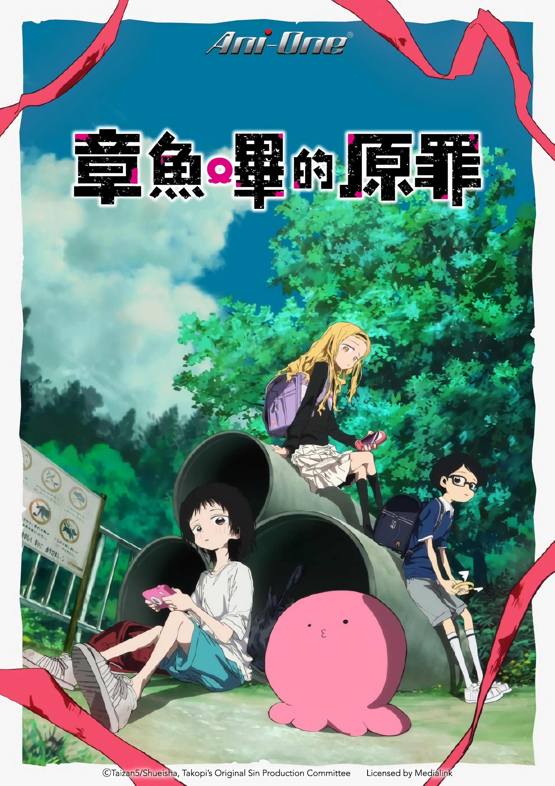
章鱼哔的原罪
12月20日晚
时光流逝，饭菜依旧美味
12月17日
花了好长时间，偶尔看一集，终于看完了
没有什么特殊的感觉，很不错的日常番
花了好长时间，偶尔看一集，终于看完了
没有什么特殊的感觉，很不错的日常番
我们不可能成为恋人！绝对不行。 (※似乎可行？)
9月26日00:17:07
好喜欢紫阳花篇的这几集
紫阳花一开始无感后面越看越喜欢呢
期待十一月的续篇
好喜欢紫阳花篇的这几集
紫阳花一开始无感后面越看越喜欢呢
期待十一月的续篇
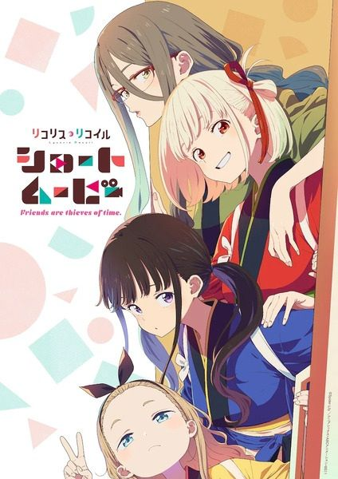
Lycoris Recoil: Friends are thieves of time.
还是日常好哇
为什么不出一万集的日常给我看呜呜呜
为什么不出一万集的日常给我看呜呜呜
颂乐人偶
第一次打一星
难忘的追番经历
难忘的追番经历
Lycoris Recoil
3月25日23:47:08
神作
神作
境界的彼方
补，初二看的
迷途之子!!!!!
1月23日00:50:19
少女乐队Cry
考完期末看的
tomo太喜欢了
tomo太喜欢了
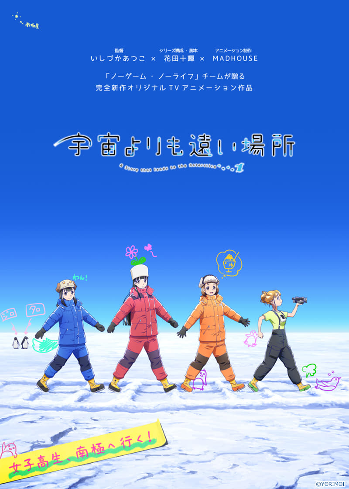
比宇宙更遥远的地方
12月3日17:21:01于宿舍看完了最后两集
每个人的心结不断解开，只剩女主的时候，朋友最后的回应真的是太惊喜了
每个人的心结不断解开，只剩女主的时候，朋友最后的回应真的是太惊喜了
少女终末旅行
10月22日中午在宿舍看完最后两集
断断续续看了三个月，终于看完
节奏实在太慢
结局好评，雨点敲打瓶瓶罐罐的声音当做乐器，二度出现
如果我不知道漫画结局的话这个结局或许看起来充满希望吧…现在想来漫画结局属实有点恶趣味
断断续续看了三个月，终于看完
节奏实在太慢
结局好评，雨点敲打瓶瓶罐罐的声音当做乐器，二度出现
如果我不知道漫画结局的话这个结局或许看起来充满希望吧…现在想来漫画结局属实有点恶趣味
败犬女主太多了！
觉得8.8还是有点虚高，拉低一下
可能还是我的期待太高了，实际看下来，一部制作优良的青春恋爱戏剧，仅此而已
可能还是我的期待太高了，实际看下来，一部制作优良的青春恋爱戏剧，仅此而已
我的青春恋爱物语果然有问题。 (我的青春恋爱物语果然有问题 第二季 续)
（暂无短评）
我的青春恋爱物语果然有问题。 (我的青春恋爱物语果然有问题)
（暂无短评）
我的青春恋爱物语果然有问题。 (我的青春恋爱物语果然有问题 第三季 完)
（暂无短评）
来自深渊：烈日的黄金乡
（暂无短评）
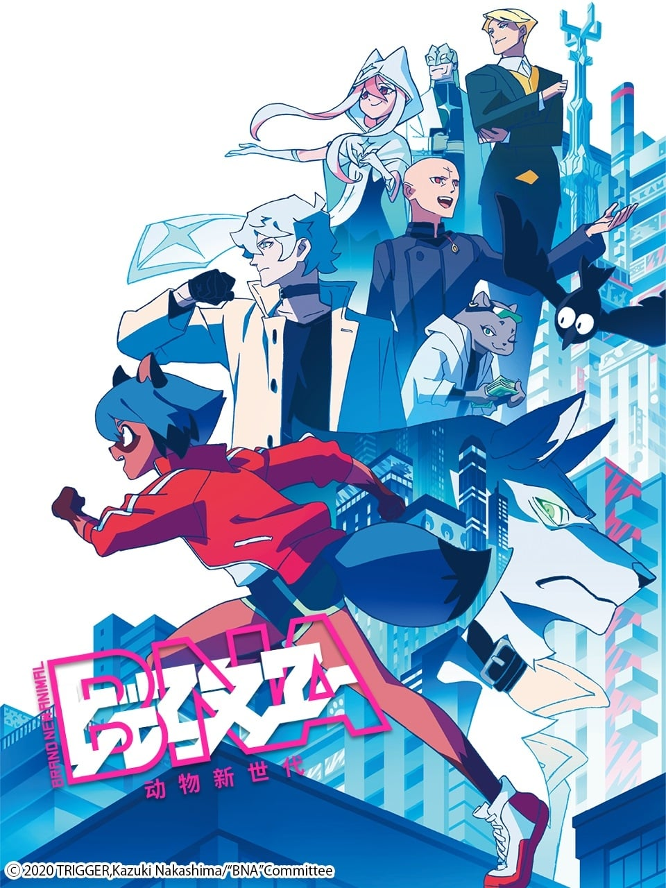
动物新世代
（暂无短评）
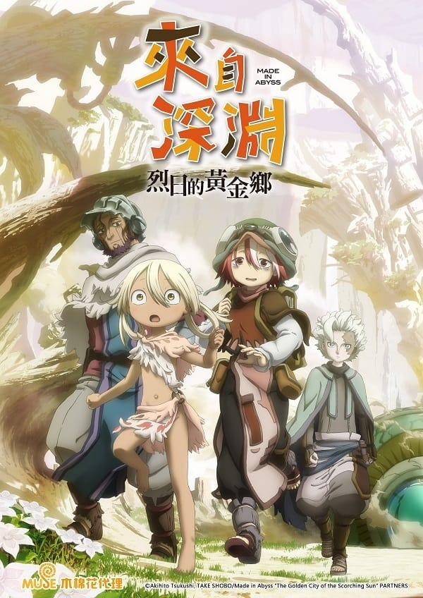
来自深渊
神作
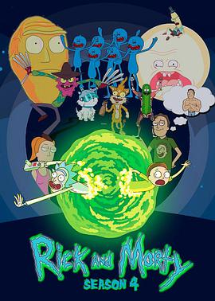
瑞克和莫蒂 第四季
（暂无短评）
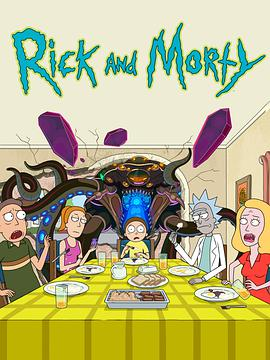
瑞克和莫蒂 第五季
（暂无短评）
第1集
（暂无短评）

第1集
（暂无短评）
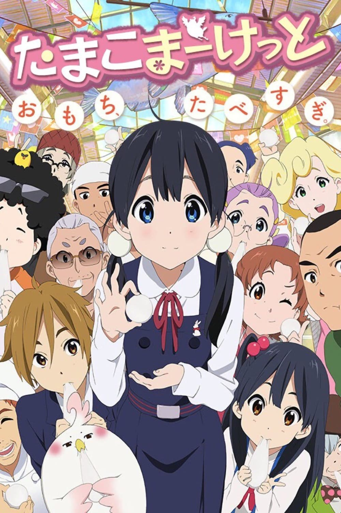
玉子市场
（暂无短评）
新世纪福音战士
（暂无短评）
冰果
心目中的神作
mayaka真的太可爱了呜呜
mayaka真的太可爱了呜呜
樱花庄的宠物女孩
（暂无短评）
孤独摇滚！
喜欢凉和虹夏
颜艺看的不尬（点名某某国漫），偶尔突破次元壁插入现实画面，这些地方让人看的很开心
有一种日常番的感觉
推荐所有不开心的人去看!!!
颜艺看的不尬（点名某某国漫），偶尔突破次元壁插入现实画面，这些地方让人看的很开心
有一种日常番的感觉
推荐所有不开心的人去看!!!
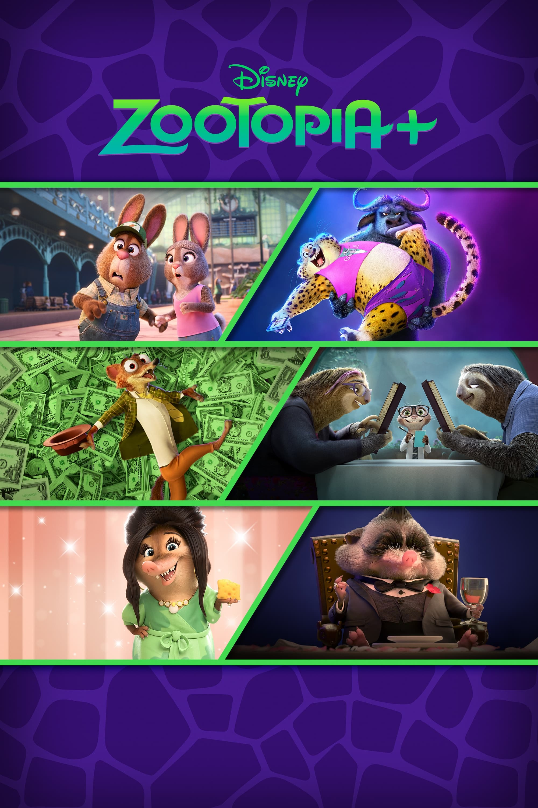
疯狂动物城+
（暂无短评）
赛博朋克：边缘行者
网课两天看完
看的时候心里一直在期望一个大团圆的结局，看完有种怅然若失的感觉
其实细想，这何尝不是一种HE呢，大卫为了自己，也为了别人的梦想拼命到了最后一刻。露西也一定会好好生活下去
只是心疼丽贝卡，心疼那些无辜死去的人
“夜之城没有活着的传奇”
自始至终他们的反抗都没有丝毫地改变夜之城…对大卫所做的只是把他当做一个试验品罢了，亚当重锤也证明了他们的无力
大卫并没有什么特别的能力，但他也是独一无二的传奇
以及音乐和画风都很棒
—————
豆瓣的氛围是什么鬼…
看的时候心里一直在期望一个大团圆的结局，看完有种怅然若失的感觉
其实细想，这何尝不是一种HE呢，大卫为了自己，也为了别人的梦想拼命到了最后一刻。露西也一定会好好生活下去
只是心疼丽贝卡，心疼那些无辜死去的人
“夜之城没有活着的传奇”
自始至终他们的反抗都没有丝毫地改变夜之城…对大卫所做的只是把他当做一个试验品罢了，亚当重锤也证明了他们的无力
大卫并没有什么特别的能力，但他也是独一无二的传奇
以及音乐和画风都很棒
—————
豆瓣的氛围是什么鬼…
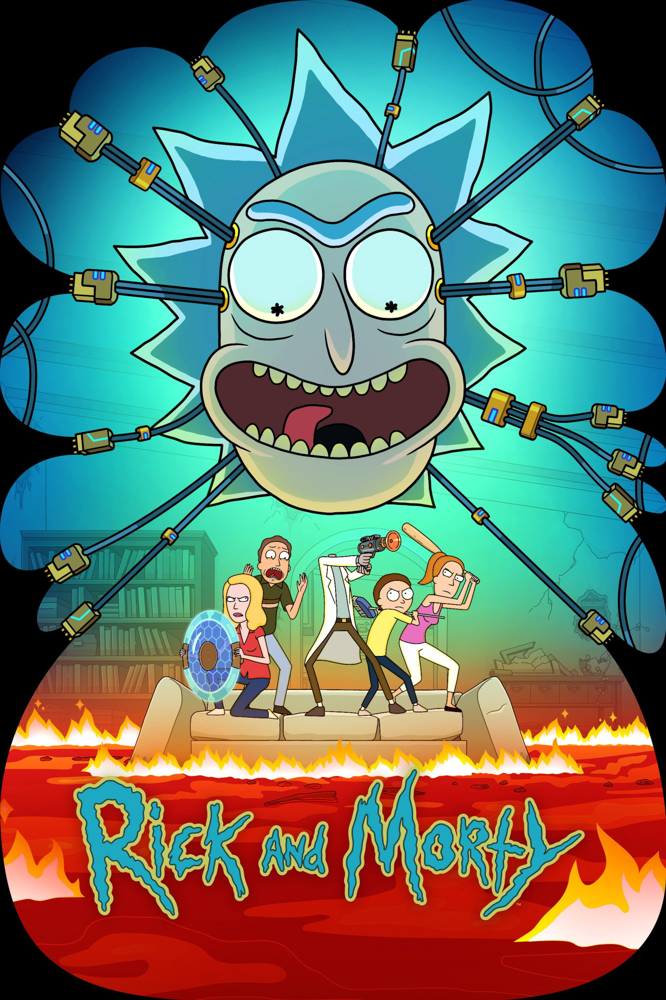
瑞克和莫蒂
（暂无短评）
功勋
看完了袁隆平的部分，感谢班主任
动物狂想曲 第二季
名为beastar但和beastar一点关系都没有…
结局完全看不够啊 给我出第三季!!
结局完全看不够啊 给我出第三季!!
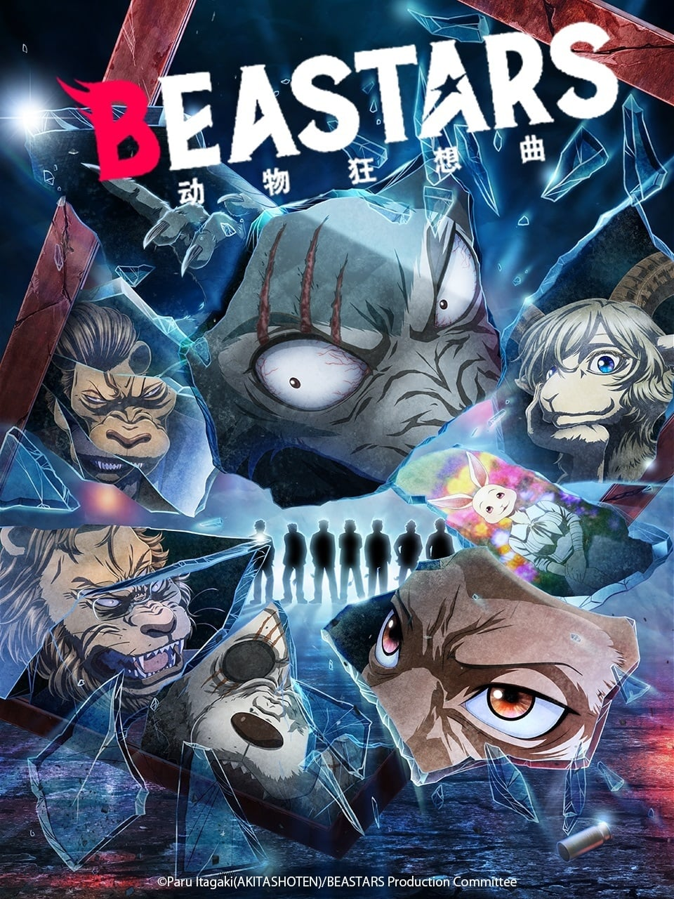
动物狂想曲
（暂无短评）
去他*的世界 第二季
（暂无短评）
去他*的世界
（暂无短评）
当时追着看的，每周看电锯人和孤独摇滚，真怀念
当时感觉没有很糟，现在已经忘记了